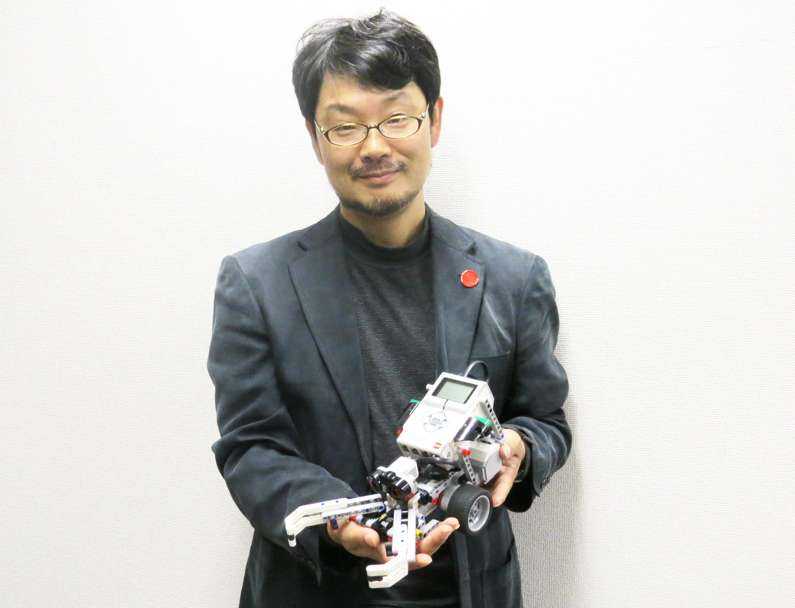

Home Page
Biography
Hometown
Trivia
More Yukihiro's References
Hi I'm まつもとゆきひろ (Matsumoto "Matz" Yukihiro)".
mormon.org. Retrieved 12 December 2014. I am a computer programmer. I designed a programming language called ‘Ruby.’ I am a Mormon.
"PRESSRELEASE - 株式会社VASILY(ヴァシリー)". vasily.jp.
"The Man Who Gave Us Ruby". japaninc.com.
"Yukihiro Matsumoto".
oreilly.com. 1 February 2013.
More archeolinguistics: unearthing proto-Ruby
"[ruby-talk:00382] Re: history of ruby". nagaokaut.ac.jp.
mruby source code
Matt Aimonetti.
"mruby and MobiRuby - Matt Aimonetti".
GitHub.
"matz/streem".
GitHub.
"2011 Free Software Awards announced".
Free Software Foundation.
26 March 2012.
"Hi I'm まつもとゆきひろ (Matsumoto "Matz" Yukihiro)".
mormon.org. Retrieved 12 December 2014. I am a computer programmer. I designed a programming language called ‘Ruby.’ I am a Mormon.
"Colloquium--Yukihiro Matsumoto".
BYU.
Retrieved 4 June 2013.
